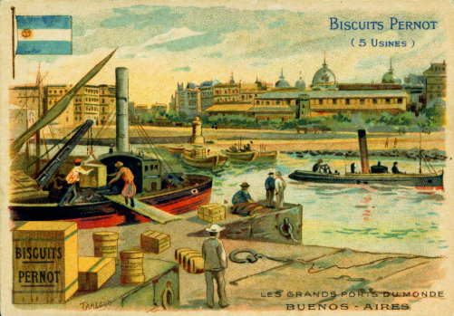
❇ Collectible French postcard featuring the port of Buenos Aires (circa 1816–1825)
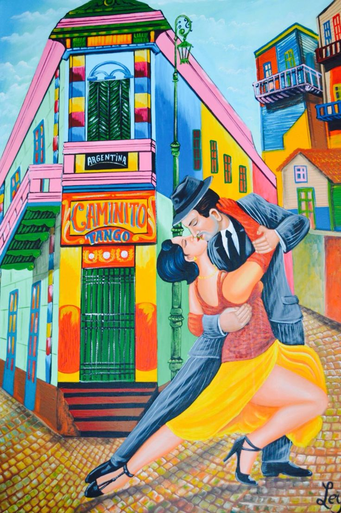
❇ Argentine Tango Dancers
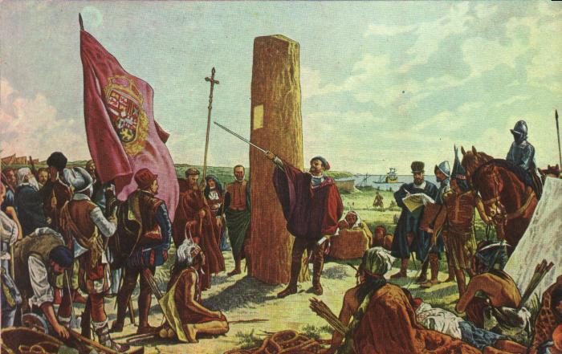
❇ Image 1.2: The founding of the city by the conquistador Pedro de Mendoza (1537)
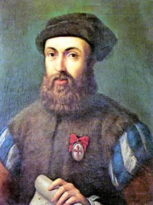
❇ Image 1.3: The German mercenary Ulrico Schmidl
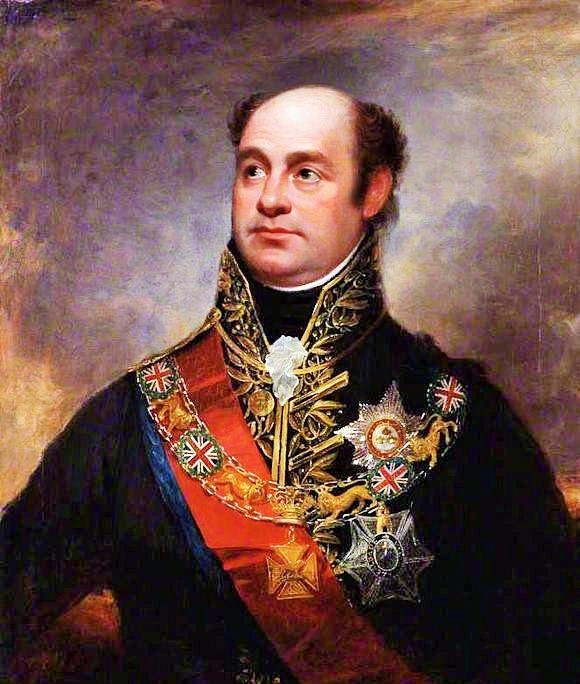
❇ Image 2.2: Colonel William Carr Beresford
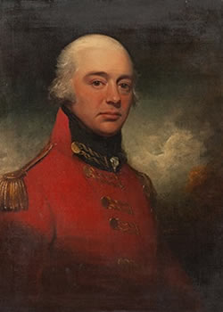
❇ Image 2.3: Lieutenant General John Whitelocke
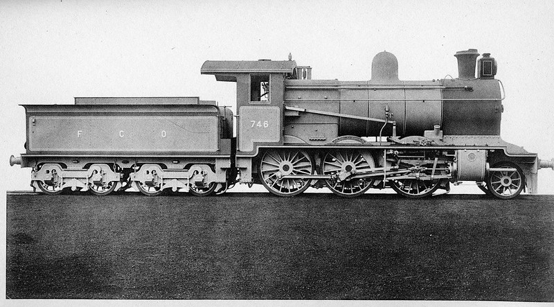
❇ Image 4.3: The steam locomotive of the Buenos Aires Western Railway (1873)
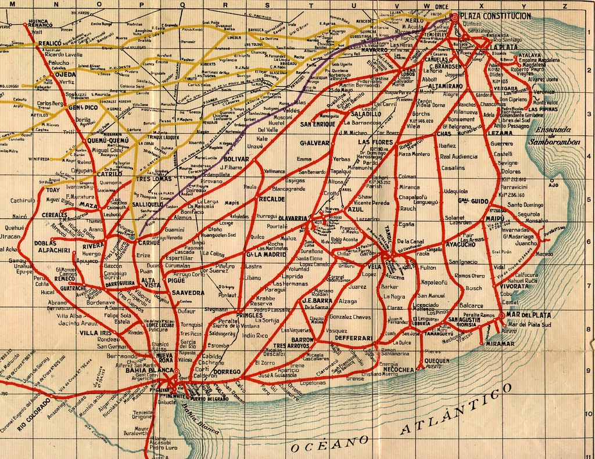
❇ Image 4.4: Map of the Buenos Aires railway network (1911)
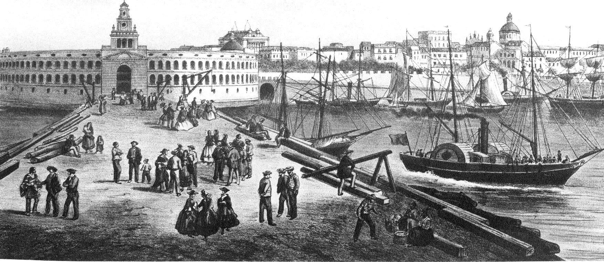
❇ Image 4.5: The historic port of Buenos Aires.
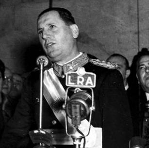
❇ Image 5.2: Perón's speech after his victory in the 1946 presidential elections
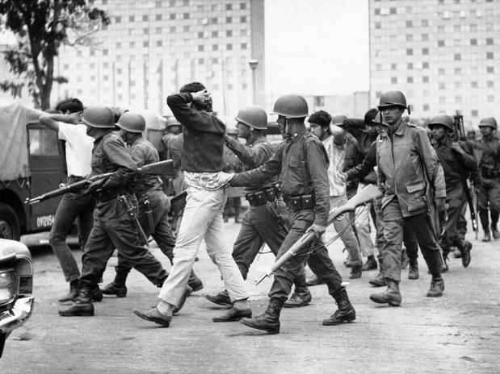
❇ Image 7.3: The brutality of the "Dirty War"
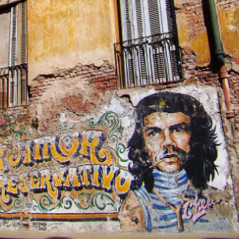
❇ Image 7.4: Mural of Ernesto "Che" Guevara on a street in Buenos Aires
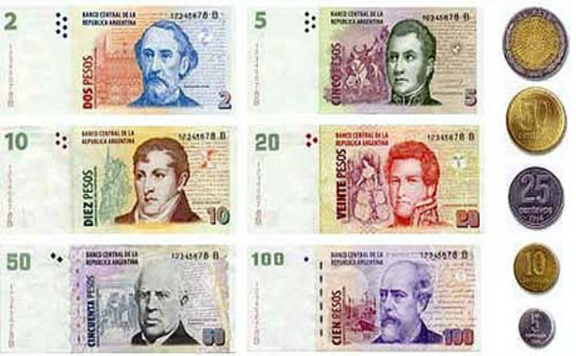
❇ Image 8.3: Argentine pesos. Banknotes and coins
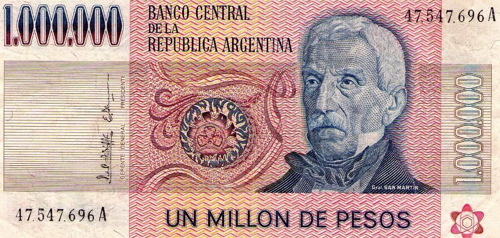
❇ Image 8.4: Historic one million pesos banknote! Due to high inflation, the value of money was significantly reduced.
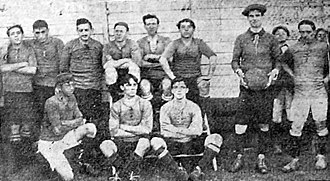
❇ Image 11.2: The Boca Juniors starting eleven of the first Superclásico (1913)
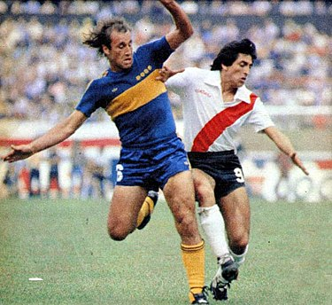
❇ Image 11.3: Roberto Mouzo (Boca) and Ramón Díaz (River) during a Superclásico in 1981
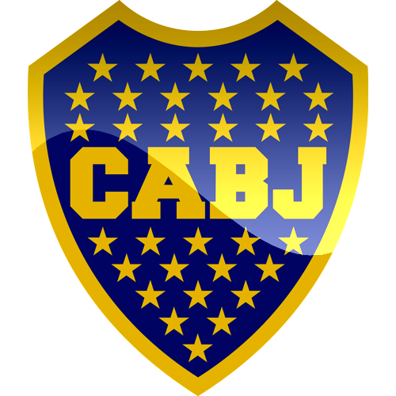
❇ Image 11.4: The Boca Juniors crest

❇ Image 11.5: The River Plate crest
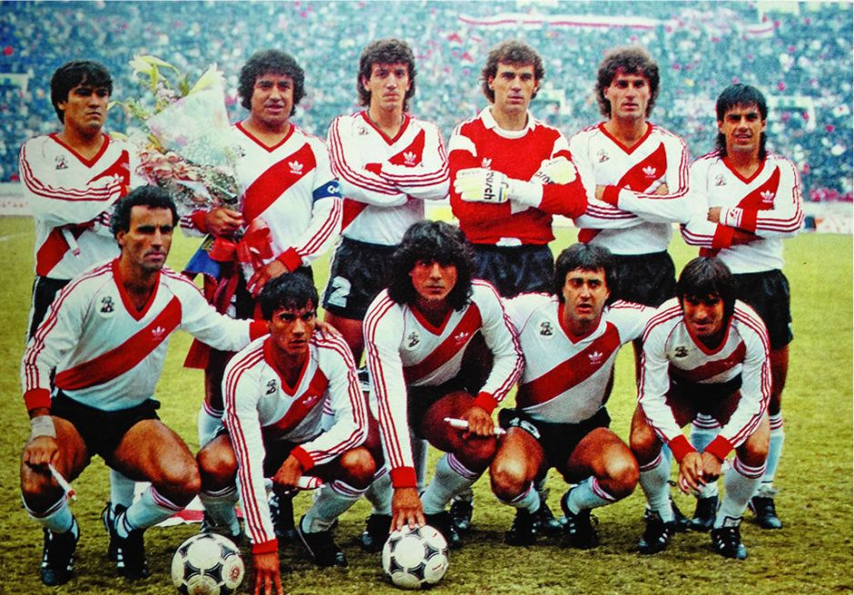
❇ Image 11.6: The River Plate team that was crowned champion of Latin America in 1986
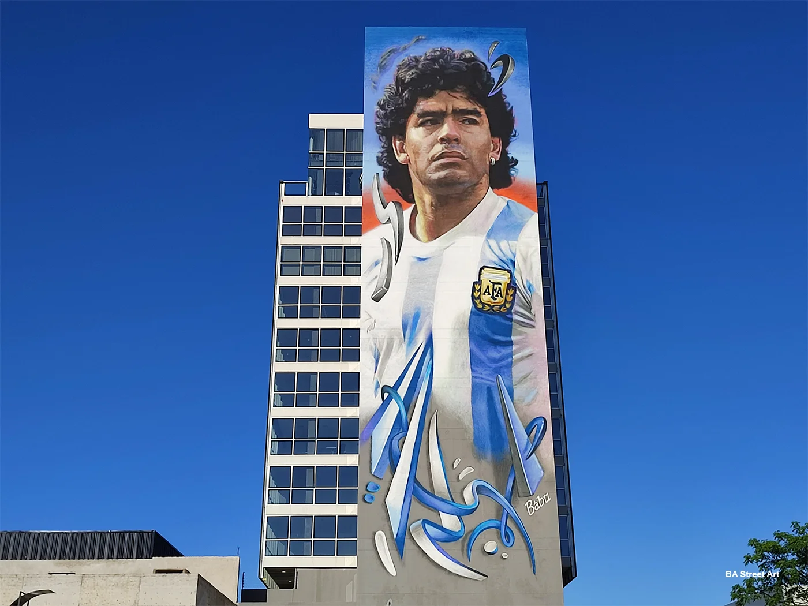
❇ Image 11.7: Mural of Diego Maradona on a building in Buenos Aires
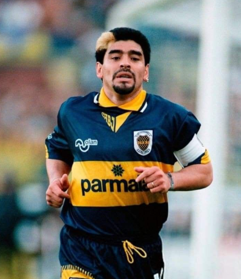
❇ Image 11.8: Diego Maradona (1996)
Buenos Aires is one of South America's most important cities,
with a
long and fascinating history. It has lived
under the shadow of secret police,
on more than one
occasion, has been attacked by foreign powers,
and holds
the unfortunate distinction of being one
of the only cities in history
to be bombed by its own navy!
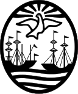
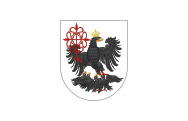
❇ The emblem and the flag of the city
❇ The National Anthem of Argentina
It was home to ruthless dictators, bright-eyed idealists, and
some of the most important writers
and artists in Latin American history.
The city experienced economic booms that brought extraordinary wealth, as well
as economic collapses that plunged the population into poverty.
Buenos Aires was founded twice. A settlement
at the present-day site was briefly
established in 1536 by the conquistador Pedro de Mendoza, but attacks
by local indigenous groups forced the colonists to
relocate to Asunción, Paraguay,
in 1539.
By 1541, the site had been burned and abandoned.
The harrowing story of the
attacks and the overland journey to Asunción was recorded by one of the survivors, the
German mercenary Ulrico Schmidl, after he returned to his homeland around 1554.
In 1580, another settlement was established, and this one endured.
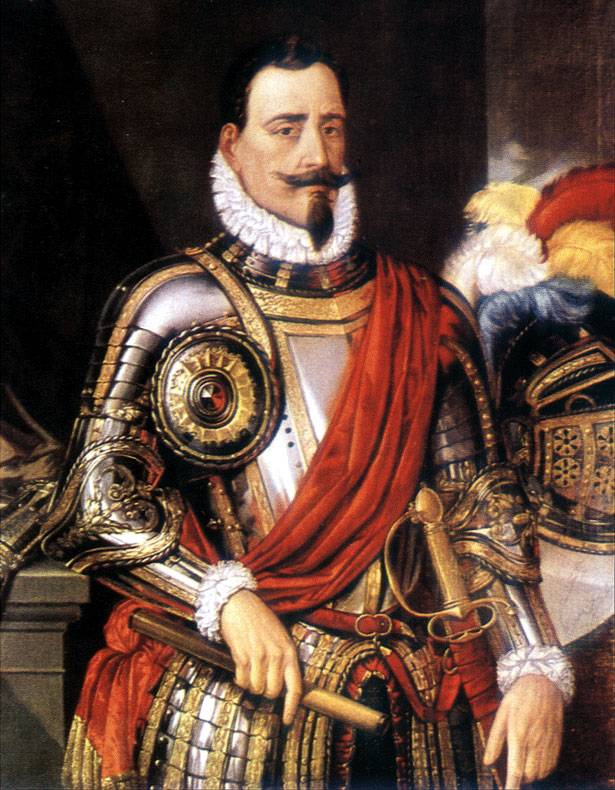
❇ Image 1.1: Pedro de Mendoza
Using the alliance between Spain and Napoleonic France as a pretext,
Britain attacked Buenos Aires twice between 1806 and 1807,
attempting to further weaken Spain while simultaneously acquiring valuable
New World colonies to replace those it had recently
lost
in the American Revolution.
The first attack, led by Colonel William Carr Beresford,
succeeded in capturing Buenos Aires, although Spanish forces
from Montevideo were able to retake it
approximately two months later.
A second British force arrived in 1807 under the command
of Lieutenant General John Whitelocke. The British captured Montevideo but were unable
to capture Buenos Aires, which was skillfully defended by urban guerrillas.
The British were forced to retreat.
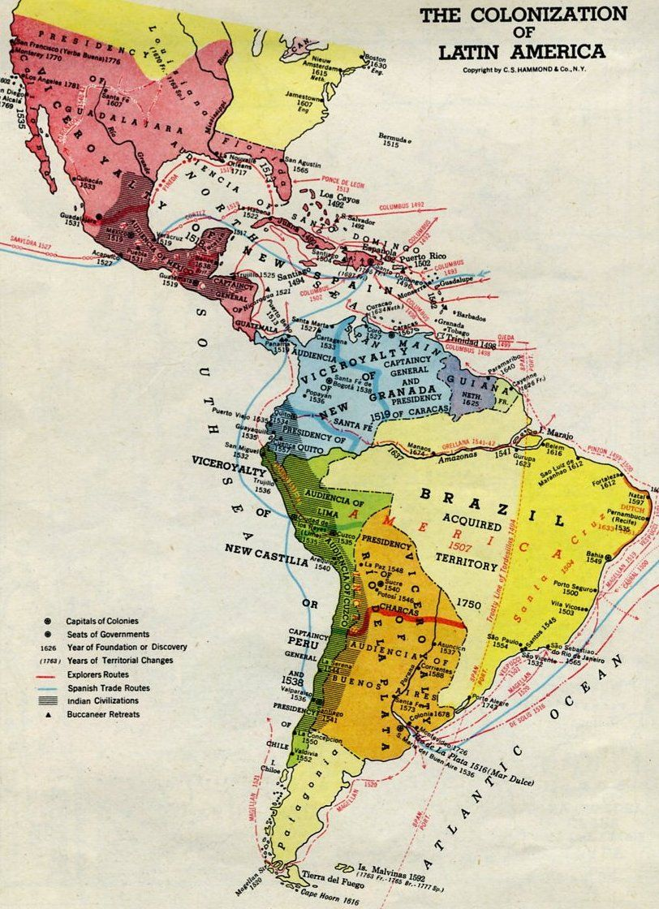
❇ Image 2.1: Colonial map of Latin America
The British invasions had a secondary effect on the city. During
the invasions, Spain had essentially left the city to its fate,
and it was the citizens of Buenos Aires who took up arms
and defended their city. When Spain was invaded by
Napoleon Bonaparte in 1808, the residents of Buenos Aires decided they had
seen enough of Spanish rule, and in 1810 they established an independent government,
although official independence would not come until 1816.
The struggle for Argentine Independence, led by José de San Martín,
was largely fought elsewhere, and Buenos Aires
did not suffer terribly during the conflict.
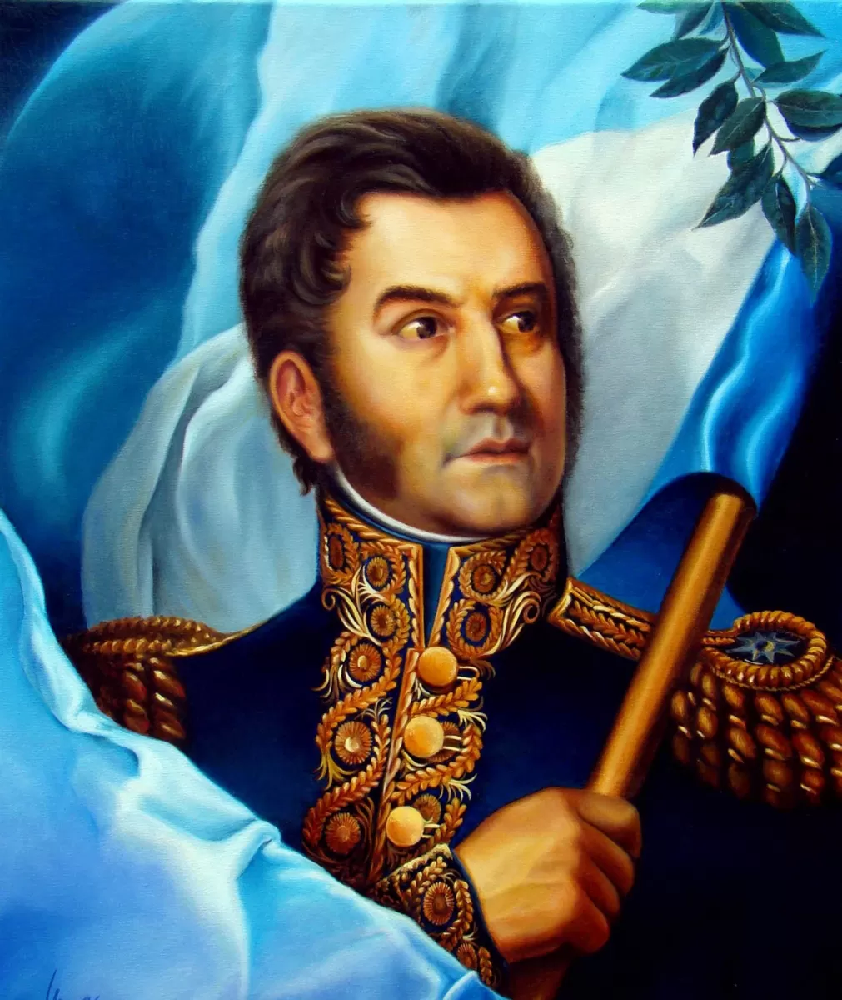
❇ Image 3.1: José de San Martín
The newly independent country was forced to continue fighting for its existence.
Both England and France attempted to seize
Buenos Aires in the mid-1800s, but failed. Buenos Aires
continued to thrive as a commercial port, and the hide and leather trade
flourished, especially after the construction of a railway connecting the port to the country's
interior where the cattle ranches were located. Towards the end of the century,
the young city developed a taste for European high culture,
and in 1908 the Teatro Colón opened its doors.
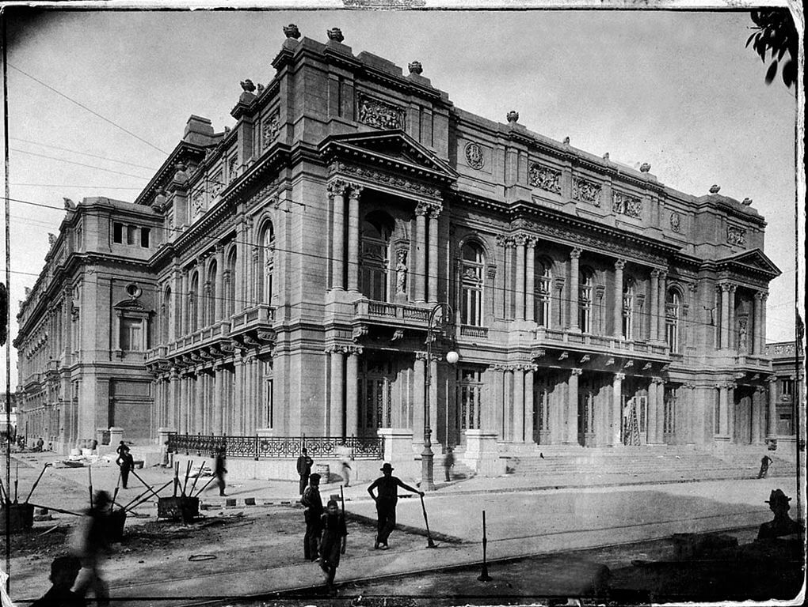
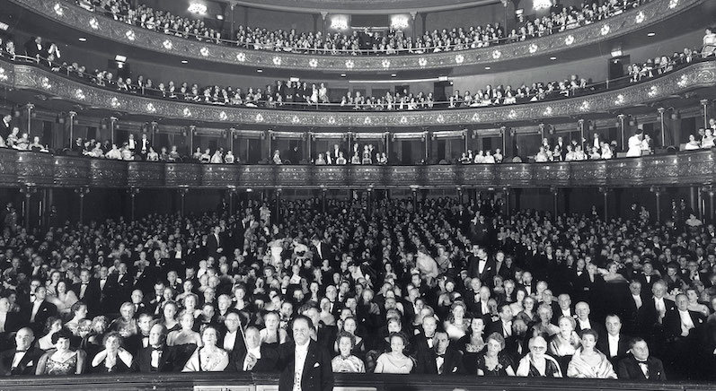
❇ Images 4.1 and 4.2: The inauguration of Teatro Colón in 1908
Juan Perón and his famous wife Evita came to power
in the early 1940s, and he reached the presidency in 1946.
Perón was a very powerful leader, blurring the lines between elected president and dictator.
Unlike many strongmen, however, Perón was a liberal who empowered trade unions
(while keeping them under control) and improved education.
The working class adored
him and Evita, who opened schools and clinics and
and distributed state funds to the poor. Even after his ousting in 1955
and forced exile, he remained a powerful force in Argentine politics.
He even made a triumphant return to run in the 1973 elections, which he won,
though he died of cardiac arrest after about a year in power.
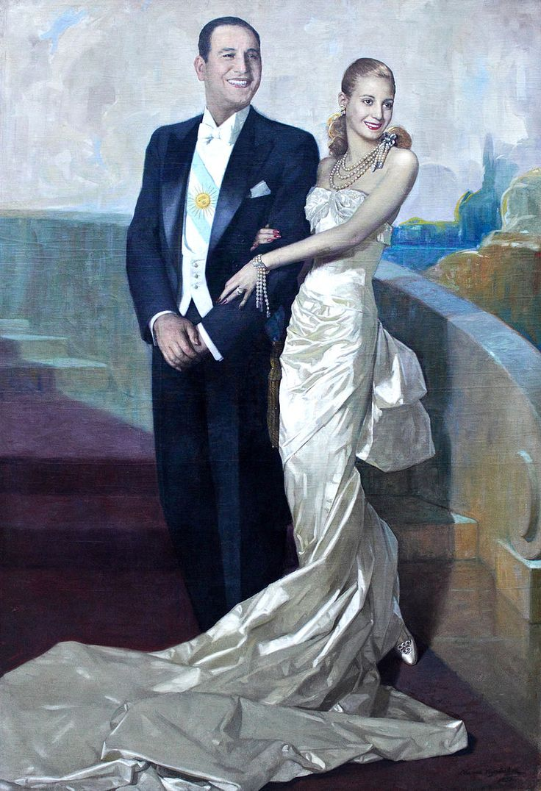
❇ Image 5.1: Juan and Evita Perón
On June 16, 1955, Buenos Aires witnessed one of its darkest days.
Anti-Perón forces within the military, seeking to remove him from power,
ordered the Argentine Navy to bomb Plaza de Mayo,
the city's central square. It was intended that this act would precede
a general coup. Naval aircraft bombed and struck the square for hours,
killing 364 people and injuring hundreds more. The Plaza was targeted because it
was a gathering point for pro-Perón citizens. The army and
the air force did not participate in the attack, and the coup attempt failed.
Perón was removed from power approximately three months later by another
uprising that involved all branches of the armed forces.
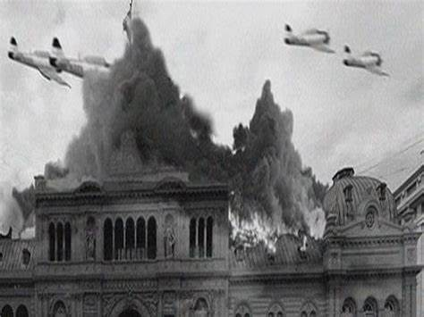
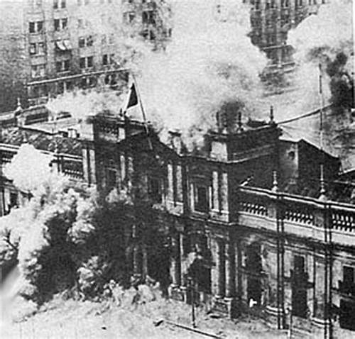
❇ Images 6.1 and 6.2: The bombing of Plaza de Mayo
In the early 1970s, communist guerrillas, taking
their cue from Fidel Castro's takeover of Cuba,
attempted to incite uprisings across several Latin American nations,
including Argentina. They were opposed by right-wing groups that were equally destructive.
They were responsible for numerous incidents in Buenos Aires, including the Ezeiza massacre,
when 13 people were killed during a pro-Perón rally. In 1976,
a military junta overthrew Isabel Perón, Juan's wife,
who was serving as vice president when he died in 1974. The military soon launched
a crackdown on dissidents, initiating the period known as "La Guerra Sucia" ("The Dirty War").
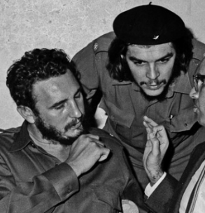
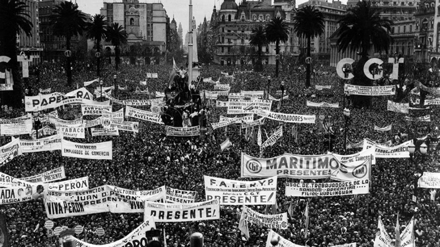
❇ Image 7.1: Fidel Castro and Ernesto "Che" Guevara
❇ Image 7.2: Public protests against the "Dirty War"
Buenos Aires gained autonomy to elect its own mayor in 1993.
Previously, the mayor was appointed by the president. Just as the residents of Buenos Aires
were putting the horrors of the Dirty War behind them, they fell victim to an economic disaster.
In 1999, a combination of factors—including an artificially inflated exchange rate
between the Argentine peso and the US dollar—led to a severe recession,
and people began to lose confidence in the peso
and in Argentine banks. In late 2001, a run on the banks occurred,
and in December 2001 the economy collapsed. Angry protesters in the streets of Buenos Aires
forced President Fernando de la Rúa to flee the
the presidential palace by helicopter. Briefly, unemployment reached 25%.
The economy eventually stabilized, but not before many businesses and citizens went bankrupt.
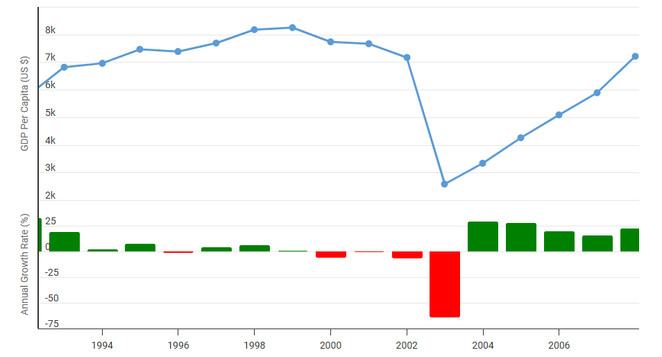
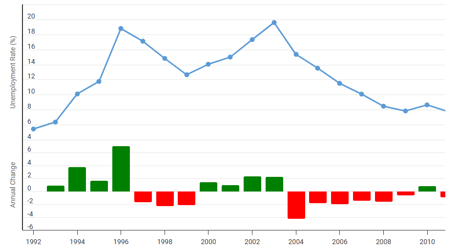
❇ Chart 8.1: The evolution of GDP per capita from 1994 to 2006 (Source: macrotrends)
❇ Chart 8.2: The evolution of the unemployment rate from 1992 to 2010 (Source: macrotrends)
In 1996, following the 1994 constitutional reform,
the city gained administrative autonomy and held its first mayoral elections
(the title of the position changed to "Chief of Government"). The winner was Fernando de la Rúa,
who was later elected President of the country.
De la Rúa's successor, Aníbal Ibarra,
won two elections, but was removed from office on March 6, 2006, as a result of the fire that
broke out at the República Cromañón venue, claiming the
lives of nearly 200 people. The mayoralty was transferred to Jorge Telerman,
who had been serving as acting mayor since December 2005.

❇ Image 9.1: Fernando de la Rúa
The city is divided into 48 barrios (neighborhoods) for administrative purposes.
This division was originally based on Catholic parishes, but
numerous modifications were made from the 1940s onwards.
Under a more recent administrative restructuring, the city was divided into
15 comunas (communes). The most picturesque
and well-known neighborhoods are La Boca, San Telmo,
Recoleta, Palermo, and Puerto Madero.
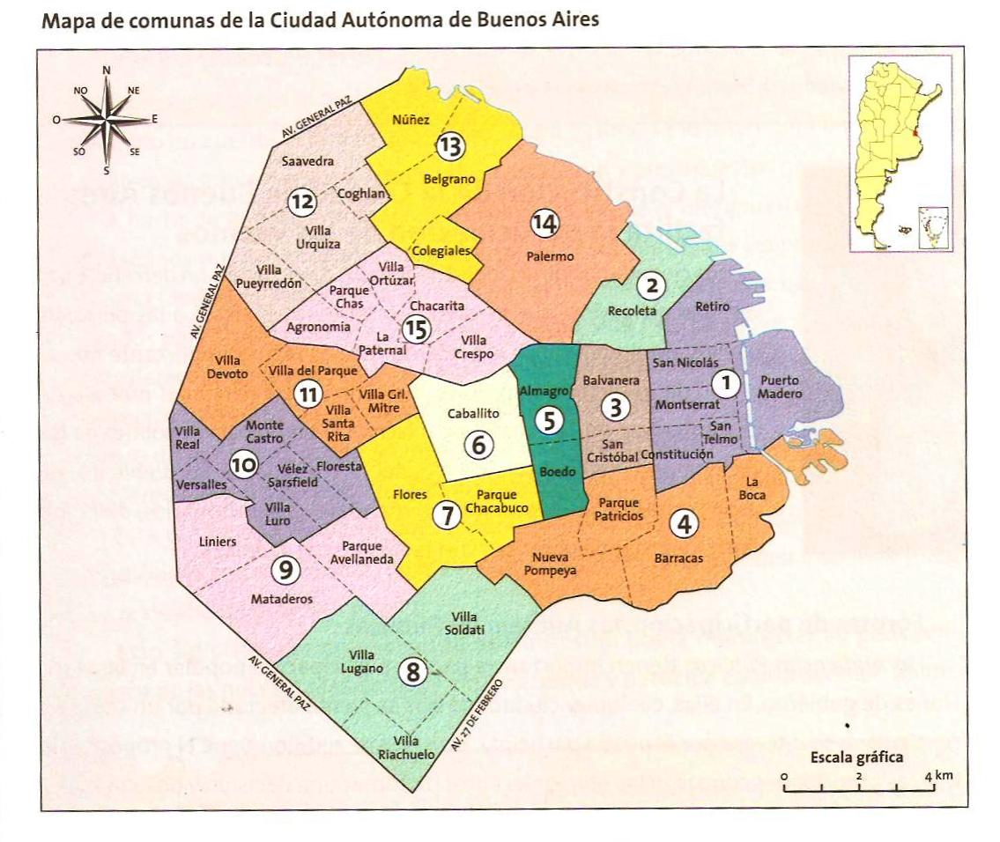
❇ Image 10.1 : Map of the 15 communes of Buenos Aires
During their early years, both clubs were based in the
working-class neighborhood of La Boca in Buenos Aires, with River being founded in 1901
and Boca in 1905. However, in 1925 River moved to the
north of the city and into the affluent neighborhood of Núñez.
Since then, Boca Juniors has represented the working class of the capital and of all Argentina.
Boca's nickname is Los Xeneizes (the Genoese) due to the local Italian immigrant
community, while River's corresponding nickname is Los Millonarios
(The Millionaires) due to their support from the upper social class.
Boca fans call River supporters gallinas (chickens),
while River fans call Boca supporters los chanchitos (little pigs).
River are called "chickens" because their players allegedly lack the courage
and guts compared to Boca's, while
Boca are called "little pigs" because, according to River supporters,
smells bad due to its impoverished location
near the port.
❇ Click the corresponding team button to change the color of the above paragraph
to the team's color!
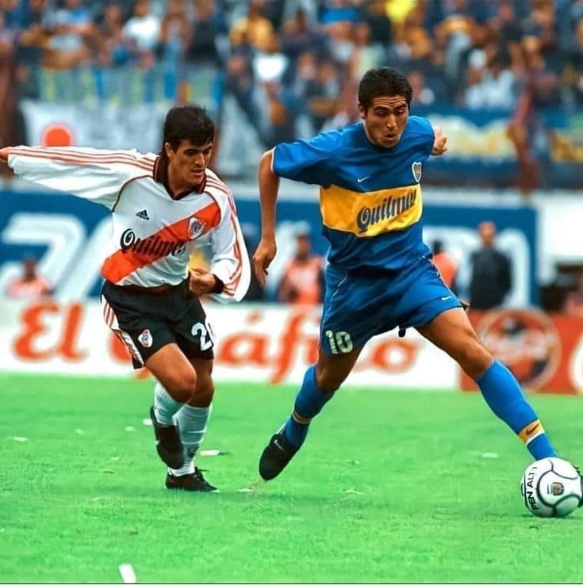
❇ Image 11.1: Juan Román Riquelme dribbling the ball